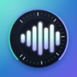

Sound Meter: Ses ÖlçerGizlilik Politikası
Sound Meter tamamen cihazınızda çalışır. Kişisel verileri toplamaz, iletmez, satmaz veya üçüncü taraflarla paylaşmayız.
Mikrofon ve ses
Sound Meter, ortamdaki ses seviyesini tahmin etmek için yalnızca siz ölçüm yaparken mikrofonu kullanır. Mikrofon sinyali cihazda, bellekte anlık olarak işlenir ve desibel değerlerine dönüştürülür. Ses kaydı yapılmaz, ses dosyası oluşturulmaz, konuşmalar dinlenmez veya yazıya dökülmez ve hiçbir ses cihazınızdan çıkmaz. Mikrofon iznini istediğiniz zaman cihazınızın ayarlarından kapatabilirsiniz; bu durumda uygulama ölçüm yapamaz.
Cihazda saklanan bilgiler
Bir ölçümü kaydetmeyi seçerseniz, yalnızca sayısal sonuçları saklanır: verdiğiniz ad, başlangıç tarihi ve saati, süre, minimum, ortalama (LAeq) ve maksimum desibel değerleri ile seviye grafiği için desibel değerleri. Tema, dil, kalibrasyon ayarı, ekranı açık tutma ve açılışta otomatik başlatma tercihleri de yalnızca cihazınızda saklanır. Bu bilgiler geliştiriciye gönderilmez. Cihazınızın sistem yedeklemesi (Google veya iCloud) açıksa, işletim sistemi bu uygulama verilerini kendi yedeğine dahil edebilir; geliştiricinin bu yedeklere erişimi yoktur.
Hesaplar, reklam ve analiz
Uygulama hesap gerektirmez; reklam, analiz, takip, hata raporlama veya bulut hizmeti içermez. Uygulama internet bağlantısı kullanmaz.
Saklama ve silme
Kayıtlı ölçümler ve tercihler, siz silene veya uygulamayı kaldırana kadar cihazınızda kalır. Tek bir ölçümü Geçmiş ekranında sola kaydırarak veya ölçüm ayrıntısındaki menüden, tüm geçmişi Ayarlar → Geçmişi temizle ile istediğiniz zaman silebilirsiniz. Kaydetmediğiniz ölçümler saklanmaz.
Çocukların gizliliği
Uygulama çocuklardan veya diğer kullanıcılardan kişisel bilgi toplamaz.
Değişiklikler
Veri uygulamaları değişirse bu politika ve mağaza beyanları yeni özellik yayınlanmadan önce güncellenir.
İletişim
Gizlilik soruları: turanayhan.develop@gmail.com
Privacy Policy
Effective date: September 27, 2026
Developer: Turan Ayhan
Application identifier: com.turanayhan.soundmeter
Sound Meter works entirely on your device. We do not collect, transmit, sell, or share personal data.
Microphone and audio
Sound Meter uses the microphone only while you are measuring, to estimate the ambient sound level. The microphone signal is processed in real time, in memory on the device, and converted into decibel values. No audio is recorded, no audio file is created, speech is not listened to or transcribed, and no audio ever leaves your device. You can turn off microphone access at any time in your device settings; the app cannot measure without it.
Information stored on your device
If you choose to save a measurement, only its numeric results are stored: the name you give it, the start date and time, the duration, the minimum, average (LAeq), and maximum decibel values, and the decibel values for its level chart. Theme, language, calibration offset, keep-screen-awake, and start-automatically preferences are also stored only on your device. This information is not sent to the developer. If your device's system backup (Google or iCloud) is turned on, the operating system may include this app data in its backup; the developer has no access to these backups.
Accounts, advertising, and analytics
The app requires no account and contains no advertising, analytics, tracking, crash reporting, or cloud services. The app does not use an internet connection.
Retention and deletion
Saved measurements and preferences remain on your device until you delete them or uninstall the app. You can delete a single measurement by swiping it left in History or from the menu in its details, and clear all history at any time under Settings → Clear history. Measurements you do not save are not stored.
Children’s privacy
The app does not collect personal information from children or any other users.
Changes
If data practices change, this policy and store disclosures will be updated before the new feature is released.
Contact
Privacy questions: turanayhan.develop@gmail.com